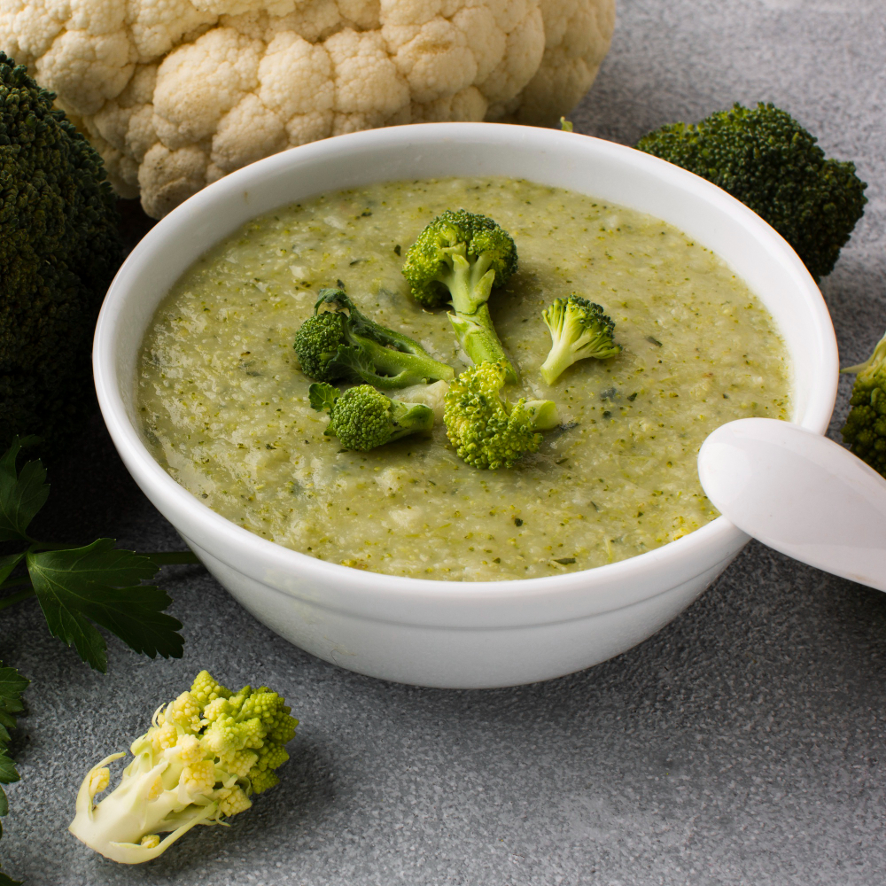

Broccoli Soup
Home

Photo from Freepik
Description
This broccoli soup recipe is thick and flavorful. It is simple, delicious, and quick to make.
Ingredients
- 5 tablespoons butter, divided
- 1 onion, chopped
- 1 stalk celery, chopped
- 3 cups chicken broth
- 8 cups broccoli florets
- 3 tablespoons all-purpose flour
- 2 cups milk
- ground black pepper to taste
Steps
- Gather all ingredients.
-
Melt 2 tablespoons butter in a medium stock pot over medium heat. Saute onion and celery until
tender.
- Add broccoli and broth, cover, and simmer for 10 minutes.
-
Pour the soup into a blender, filling the pitcher no more than halfway full. Hold down the lid of
the blender with a folded kitchen towel, and carefully start the blender, using a few quick pulses
to get the soup moving before leaving it on to puree. Puree in batches until smooth and pour into
a clean pot.
-
Melt 3 tablespoons butter in a small saucepan over medium to medium-low heat; stir in flour and
add milk. Stir until thick and bubbly, and add to soup. Season with pepper and serve.
- Serve hot and enjoy!
This recipe was originally posted at
allrecipes.com